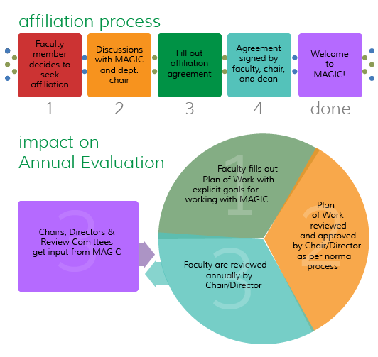
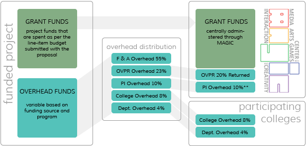

Faculty Affiliation with the MAGIC Center
As an RIT Research Center of Excellence, the MAGIC Center acts as a nexus point for the exploration of digital media, interactive experiences, and expression through technology, as well as the considered study of the impact of such work and experiences on the human condition. In order to promote a broad and inclusive culture of research and exploration, and to staff the Center with an appropriate multi-disciplinary faculty that can engage in the sustained study of the field from multiple points of view, the Center operates through a model of 'faculty affiliation'.
Under this model, individual faculty from various departments, colleges, and institutes across the university are invited to affiliate with the Center as is relevant to their scholarly and creative work and background. The Center agrees to provide resources, administration, support, and infrastructure to support such work, and, most importantly, to establish and maintain a culture of multi-disciplinary inclusion and sustained inquiry. Our goal is to provide a shared space for collaboration, construction, and discourse that enables and extends faculty research into the field.
As a part of this process, faculty are required to formally affiliate with the Center, and to document this affiliation through the completion of one of the two forms below (depending on their primary home department: these agreements are largely synonymous other than a particular nuance regarding review metrics in collaboration with the School of Interactive Games & Media that was the birthplace of the MAGIC Center concept).
Overhead Model for Affiliated Work
The following is a diagram of how overhead for funded projects is 'split out' when work is affiliated with the Center. While individual colleges and PI's still get the same percentage they would for non-affiliated work, the university gives back to the center an additional return that can be used to support the project in question, and/or kickstart additional work through the Center. In addition, individual PI's can manage their overhead through the Center, and utilize the same staff that are managing the rest of their funds for these purposes (hiring students, purchasing equipment, planning professional travel, etc.) The distribution of overhead pictured here is based on the Provost's memo regarding the distribution of overhead funds, coupled with the overhead return of an RIT Research Center of Excellence.
